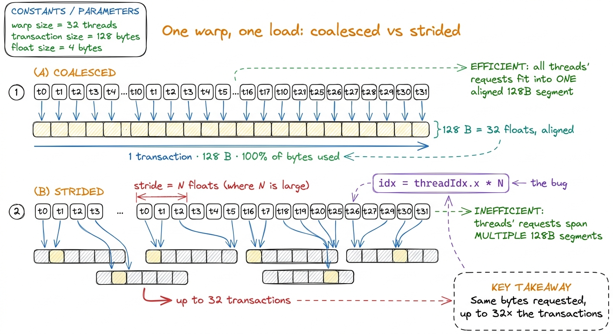
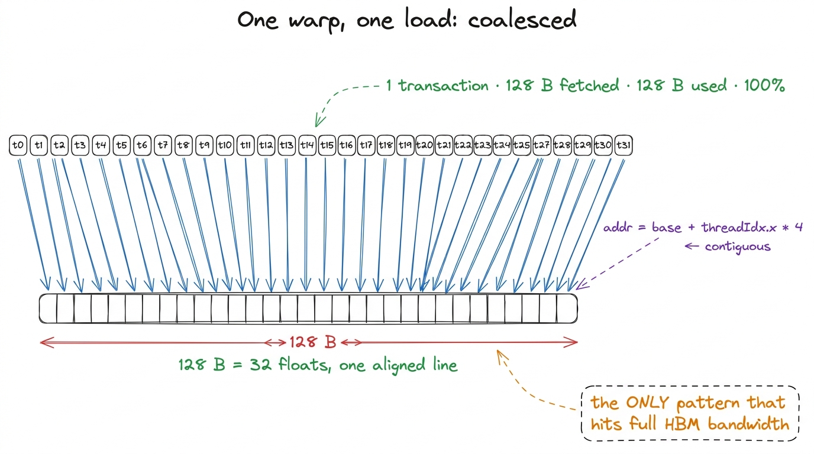
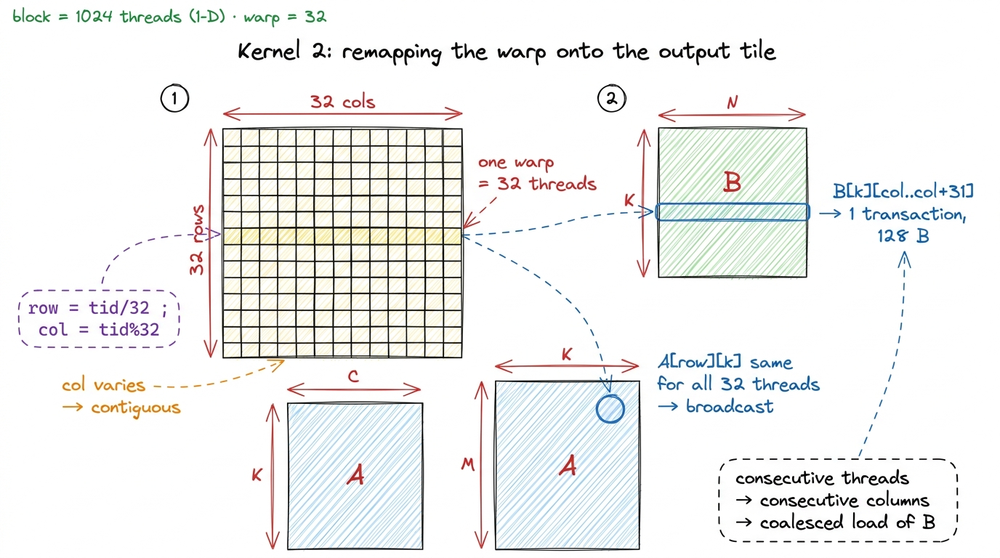
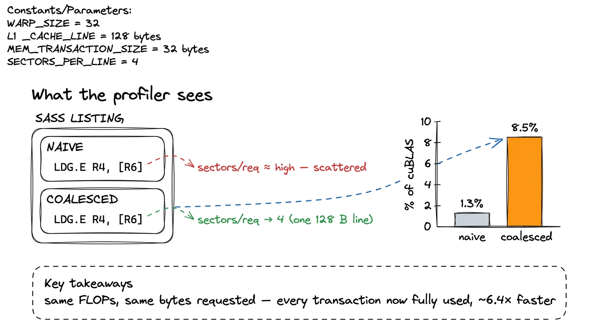

Memory coalescing
The naive GEMM kernel left us at a humiliating 1.3% of cuBLAS, and the profiler was unambiguous about why: we are memory-bound, drowning in global-memory traffic. Before we touch anything clever — before shared memory, before tiling — there is a change that costs one line and roughly quadruples our throughput. It doesn't reduce the number of bytes we read at all. It just reads them in the right order. That is memory coalescing, and understanding it is the difference between a memory system that runs at a third of its rated bandwidth and one that runs near peak.
The unit of a memory access is not a float
Here is the fact that reorganizes how you think about global memory: the GPU does not fetch one float at a time. When a warp (a group of 32 threads that execute in lockstep) issues a load instruction, the memory system does not see 32 independent requests. It looks at the 32 addresses those threads want, and it services them as a small number of fixed-size memory transactions against the L2 cache and HBM.
The natural transaction size on Hopper is a 128-byte segment, aligned to a 128-byte boundary — exactly 32 consecutive FP32 values. Internally that segment is made of four 32-byte sectors, and the hardware can fetch just the sectors it needs.1 Those 128 B / 32 B granularities are HBM-and-L2 line sizes, not something you set. What you control is alignment and contiguity of the addresses a warp issues; the hardware decides how many lines that touches.2 The 128 B cache line splits into four 32 B sectors, and L2 tracks presence per-sector. So the real granularity of a partial access is 32 B, not 128 B — a strided pattern that touches one float per line still pulls a full 32 B sector, wasting 28 of every 32 bytes rather than 124 of 128. The coalescing question is simply this: for one load instruction issued by one warp, how many of these transactions does the hardware have to run?
If the 32 threads of a warp ask for 32 contiguous, aligned floats — base, base+4, base+8, … — those addresses fall inside a single 128-byte segment. One transaction serves the entire warp. Every byte fetched is a byte some thread wanted. This is a fully coalesced access, and it is the only pattern that gets you the 3.35 TB/s HBM3 is capable of.

figure rendering · A warp issues one load. Whether that costs one transaction or thirty-tStrided access is the same reads, wasted
Now break it. Suppose consecutive threads in the warp ask for addresses that are N floats apart — thread t wants base + t*N*4 bytes. Each of those 32 addresses lands in a different 128-byte segment. The warp now needs up to 32 separate transactions to satisfy one load instruction. Worse, each of those transactions drags in a full segment (or at least a full 32-byte sector) of which the thread uses exactly one float. You paid for 32 sectors and used 32 floats out of the 256 that came back.3 "Up to" 32 because if the stride is small enough that two threads land in the same 128 B segment, they share a transaction. At stride N with a large N, no sharing happens and you hit the worst case squarely.
This is the single most common way to leave bandwidth on the floor, and the cruel part is that a strided kernel is often correct and looks reasonable in source. The FLOPs are identical, the bytes logically requested are identical — but the effective bandwidth collapses because most of every transaction is thrown away. The memory system is a firehose that only fills the buckets you line up under it.
The bytes physically travel a fixed path, and every rung of it is priced in fixed-size lines — which is exactly why the pattern, not the volume, decides your bandwidth.

figure rendering · Every load walks HBM → L2 → L1/SMEM → registers, and each level chargeRow-major layout is why this bites GEMM
Everything above depends on where in memory adjacent matrix elements physically live, and that is decided by layout. C and CUDA store 2-D arrays in row-major order: A[i][j] sits at linear offset i * N + j. Consecutive elements within a row are contiguous in memory; consecutive elements down a column are N floats apart.
So the coalescing verdict for any matrix access reduces to one question: as threadIdx.x increments across a warp, does the column index of the accessed element increment, or does the row index? Column-index-varying is contiguous and coalesces. Row-index-varying strides by N and does not.
Look back at the naive kernel from GEMM kernel 1. We mapped threads like this:
const uint m = blockIdx.y * blockDim.y + threadIdx.y;
const uint n = blockIdx.x * blockDim.x + threadIdx.x;With a 32 × 32 block, the 32 threads of a warp are consecutive in the linearized thread index. CUDA linearizes as threadIdx.x + threadIdx.y * blockDim.x, so a warp is a group of 32 threads that share the same threadIdx.y and span threadIdx.x = 0..31.4 This is the detail almost everyone gets wrong the first time. Warps are not formed from threadIdx.y; they are formed by flattening (x, y, z) with x fastest. A 32×32 block is 32 warps, each one a full row of constant y. Get this backwards and your entire coalescing analysis inverts. So within one warp, n (from threadIdx.x) varies and m (from threadIdx.y) is constant.
Trace the two loads in the inner k loop:
B[k*N + n]— as the warp steps through its threads,nincrements, so we walkB[k][n],B[k][n+1], … along a row ofB. Contiguous. Coalesced. Fine.A[m*N + k]— as the warp steps through its threads,mis constant andkis the same for all of them, so all 32 threads read the exact same address inA. That is actually a broadcast, which the hardware handles well.
So the naive kernel is not as badly strided as the worst case — but the mapping is fragile, and the moment we look at how the block as a whole strides across A and B between warps, and how the compiler is forced to issue these loads, we are leaving a large amount of the memory system idle. The real problem is that the warp-to-data assignment was chosen by accident, not designed. Kernel 2 designs it.
The remap: one line, chosen deliberately
The fix is to assign the flattened thread index to (m, n) ourselves, so that the fastest-moving axis of the warp maps to the contiguous axis of the output — and, crucially, so that consecutive threads read consecutive columns of B, the load that actually dominates. We keep a block of 32 * 32 = 1024 threads but index it as a 1-D block and compute a 2-D position by hand:
const uint BLOCKSIZE = 32;
// block is now 1-D: blockDim = 32*32, threadIdx.y == 0
const uint row = blockIdx.y * BLOCKSIZE + (threadIdx.x / BLOCKSIZE);
const uint col = blockIdx.x * BLOCKSIZE + (threadIdx.x % BLOCKSIZE);
if (row < N && col < N) {
float acc = 0.0f;
for (int k = 0; k < N; ++k)
acc += A[row * N + k] * B[k * N + col];
C[row * N + col] = acc;
}launched with a flat block:
dim3 block(BLOCKSIZE * BLOCKSIZE); // 1024 threads, 1-D
dim3 grid(CEIL_DIV(N, BLOCKSIZE), CEIL_DIV(N, BLOCKSIZE));
sgemm_coalesced<<<grid, block>>>(N, A, B, C);The only real change is col = threadIdx.x % 32 and row = threadIdx.x / 32. Now a warp is threadIdx.x = 0..31, which means col runs 0..31 and row is constant across the warp. Consecutive threads within a warp map to consecutive columns of the output C, and therefore to consecutive columns of B — the B[k*N + col] load is now perfectly contiguous for every warp, and the A[row*N + k] load is a clean broadcast (all 32 threads share row and k). Every warp's B load is exactly one 128-byte transaction with zero waste.

figure rendering · Kernel 2. The whole change is deciding, on purpose, that the warp's faThe profile, and a bold number
Compile and inspect the SASS, and the difference shows up exactly where you'd predict: the global load servicing B now compiles to a coalesced LDG.E that Nsight Compute reports as one sector-efficient transaction per warp instead of a scatter. In the memory workload section, the metric to watch is l1tex__t_sectors_per_request — sectors fetched per load request. The naive mapping bloats this well above the ideal; the remapped kernel drives it down toward the floor of 4 sectors (one 128 B line) per warp for the B access. Global-memory throughput, the number that was pinned far below 3.35 TB/s, jumps substantially.

figure rendering · The change is invisible in the FLOP count and visible everywhere in thThe result: about 8.5% of cuBLAS, up from 1.3%. That is roughly a 6.4× speedup from a change that touched two arithmetic expressions and did not remove a single floating-point operation or a single logically-required byte. We simply stopped throwing away most of every memory transaction.
Why this is only the first memory win
It is worth being honest about what coalescing did not fix. We are still reading O(N³) floats from HBM to do O(N³) flops — the arithmetic intensity is still about 1 flop per element loaded, still hundreds of times below the H100's ridge point of ~295 FLOPs/byte from the three regimes. Coalescing made each transaction fully useful, but it did nothing about the fact that we issue far too many of them: element A[m][k] is still re-fetched from global memory by every one of the N threads that need it.
So the ceiling here is low by construction. Coalescing is the tax you must pay to make the next optimization worth doing — there is no point staging tiles in fast on-chip memory if the loads that fill those tiles are themselves strided and wasteful. With the access pattern fixed, the obvious lever is to stop reading the same data over and over, by staging blocks of A and B into shared memory and reusing them across a whole block of threads. That is kernel 3, where we finally attack the reuse problem, and where the real climb up the ladder begins — from single-digit percentages toward the 68.7% the 2-D tiled kernel eventually reaches.
The pattern to carry forward is the one this whole change embodies: the memory system rewards you for lining threads up under contiguous, aligned addresses, and punishes you — silently, without an error — for anything else. Every kernel from here on is designed, first, around where the warp's fast axis lands in memory. Get that right and you have earned the right to be clever about everything else.